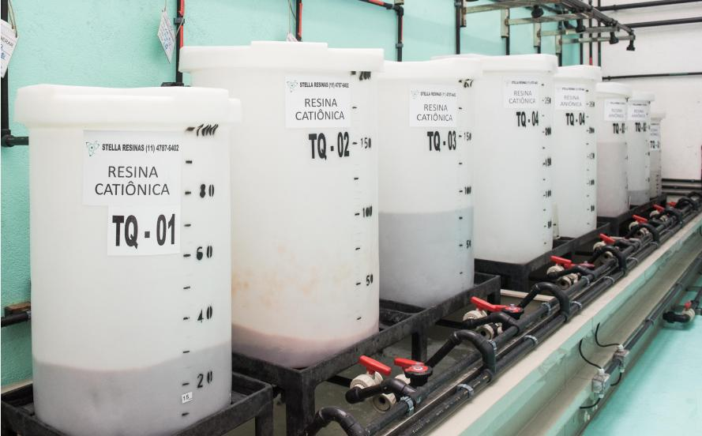
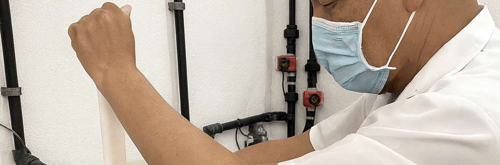
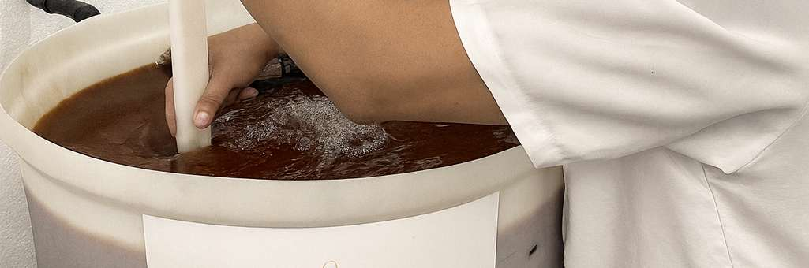

Notas de campo sobre regeneração, manutenção e boas práticas de operação.

Quando a resina satura, a qualidade da água começa a cair mesmo que o sistema ainda pareça estar "funcionando" normalmente.
Saber a hora certa de regenerar a resina de troca iônica não é achismo; é controle de processo.
Quando a resina satura, a qualidade da água começa a cair, mesmo que o sistema ainda esteja "funcionando".
Regenerar no tempo certo evita retrabalho, protege equipamentos e mantém a água dentro do padrão esperado. Resina bem gerenciada é custo controlado, operação estável e segurança no processo.
Publicado originalmente no LinkedIn da Stella Resinas.

É segurança e preservação do equipamento — o procedimento correto evita danos estruturais na resina.
No transporte da coluna para a regeneração, retirar a água interna não é detalhe; é segurança e preservação do equipamento.
O procedimento correto garante integridade da resina, evita danos estruturais e mantém o controle total do processo.
Na Stella Resinas seguimos protocolos rígidos para que cada coluna chegue pronta para iniciar a próxima etapa com qualidade.
Publicado originalmente por Stella Medeiros Yoshikawa no LinkedIn.

Nem toda resina saturada precisa virar descarte — entender os tipos disponíveis muda a conta de custo, eficiência e sustentabilidade.
Na eletroerosão, a resina de troca iônica é o que mantém a qualidade do dielétrico e, por consequência, o desempenho do processo. Ainda assim, muitas empresas não sabem que existe diferença entre os tipos de resina disponíveis nem o impacto real disso em custo, eficiência e sustentabilidade.
Entender quais resinas podem ou não ser regeneradas é o primeiro passo para decidir com mais informação e ganhar economia real na operação.
Agendamento, retirada, transporte, processamento e devolução — uma logística pensada para não interromper sua operação.
Uma das maiores objeções à regeneração de resina é o medo de ficar sem material durante o processo. O Sistema Leva e Traz existe justamente para resolver isso: logística completa de coleta, processamento e entrega, com redução do tempo de parada do sistema.
Toda a operação é documentada — da retirada à devolução — com garantia de qualidade e equipe treinada em manuseio seguro de resinas.
2 publicações reais do LinkedIn da Stella Resinas + 2 notas técnicas baseadas no material da empresa. Datas do LinkedIn são aproximadas.